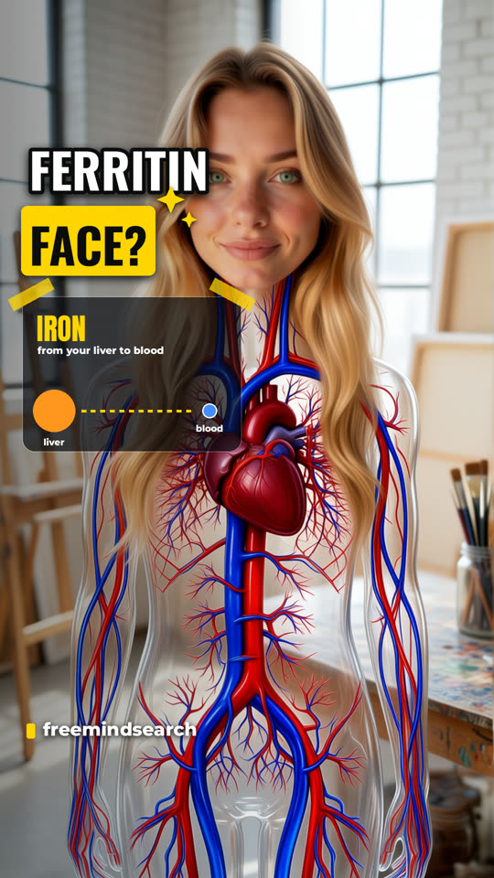

Story
Can your face really show low iron? The 'ferritin face' trend
TikTok's 'ferritin face' trend says low iron shows in your face. Here's what iron actually does: stored as ferritin, much of it in your liver, it goes into the hemoglobin in your red blood cells, where it carries oxygen. Low iron can make skin paler, but a pale face has many causes, and only a blood test can tell.
Watch on FacebookWatch on InstagramWatch on TikTokWatch on YouTube
So, did you know your liver keeps a store of iron?
Sources
- Ferritin blood test (MedlinePlus): https://medlineplus.gov/lab-tests/ferritin-blood-test/
- Iron fact sheet (NIH Office of Dietary Supplements): https://ods.od.nih.gov/factsheets/Iron-Consumer/
- Iron deficiency anaemia (NHS): https://www.nhs.uk/conditions/iron-deficiency-anaemia/
- 'Ferritin face' is trending, but can your skin really reveal low iron? (Nautilus): https://nautil.us/ferritin-face-is-trending-but-can-your-skin-really-reveal-low-iron-1285150/
Made with AI: the presenter, voice and visuals are AI-generated. Every story is researched and fact-checked by a person, with its sources listed.